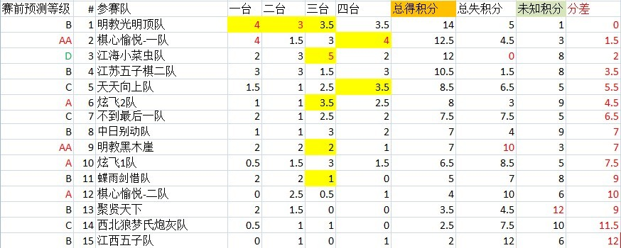

论坛山口团体战第一阶段战报及分析
#1 论坛山口团体战第一阶段战报及分析作者：踵酃 发表时间：2012-6-15 12:56:57

专栏作家愚仁独家分析战报以及重大事件：
1. 小菜虫队为何等级D会入前三?
愚仁：相信大家对这个都很有兴趣。这个是偶然也是必然的结果。 赛前刚好发生了天王组要参赛被拒的事件，
而后来娱乐组又爆料黄药师请了家教。现在小菜虫战绩如此突出，有路人要黄药师解释，其实战绩已经说明了一切。
问：那愚仁先生为什么还把他们组分为D级呢？
愚仁：因为我以为黄药师为人光明磊落，又贴图又报讯的，所以没有去采信谣言，毕竟谣言止于智者。不过后来才打听到原来他有个别名叫做“东邪”。
2. 明教黑木崖怎么了？
愚仁：其实黑木崖的目前的战绩确实另很多人不解， 目前的失分已经是10分，还有三盘未知。
看起来不妙。 首先赛前会被人看好那是情理之中， 毕竟队伍中的4人都是名人，总威望是所有队伍中最多的一队达到300+。
看来第一阶段的不好表现直接让他们与冠军越离越远，不过他们面对的5支队伍， 有4队目前排名前八，相信后面是
他们的抢分阶段。现在的目标应该是进入前四以安抚众多支持者。 让我们一起期待他们接下来的表现。
3. 江苏是黑马?
愚仁：他们可以说低调上榜，赛前的低调基本让人没有注意到他们的存在，但成绩如此突出称的上是本次真正意义上的黑马。 目前只有1.5的失分。
成绩很可能会更向前。
4. 为什么开始的时候预测明教的光明顶是B级?
愚仁：这是可以理解的， 光明顶队与黑木崖比起来更像是板凳球员。除了双眼跟极地稍微有点知名度之外其他两人名不见经传。
然而战绩说明了一切。目前排名第一；他们是总冠军的有力冲击者。 不过他们目前面对的5支队伍只有2队战绩排名前6，让我们看看他们接下来的表现。
［此帖子已被 踵酃 在 2012-6-15 13:02:19 编辑过］
［ 三道 于 2012-6-15 14:30:48 时花20金币送鲜花一朵］
［ 三道 于 2012-6-15 14:30:48 时花20金币送鲜花一朵］
［ 三道 于 2012-6-15 14:30:48 时花20金币送鲜花一朵］
［ 三道 于 2012-6-15 14:30:48 时花20金币送鲜花一朵］
［ 三道 于 2012-6-15 14:30:48 时花20金币送鲜花一朵］
#2 Re:论坛山口团体战第一阶段战报及分析作者：梧桐风 发表时间：2012-6-15 13:05:16
目测江苏队也有家教［ 三道 于 2012-6-15 14:31:46 时花250金币拍了你一板砖］
#3 Re:论坛山口团体战第一阶段战报及分析作者：极地剑客 发表时间：2012-6-15 13:14:57
楼上mm学会目测啦#4 Re:论坛山口团体战第一阶段战报及分析作者：三道 发表时间：2012-6-15 14:30:28
其实很简单，从小菜虫的下棋时间，就有足够的理由怀疑是不是小学生下的了。
#5 Re:论坛山口团体战第一阶段战报及分析作者：梧桐风 发表时间：2012-6-15 18:04:48
目测楼上要跟我火拼砖#6 Re:论坛山口团体战第一阶段战报及分析作者：没事摆石子玩 发表时间：2012-6-15 18:08:26
支持你拼 无聊又无敌的三道大师快没钱了 哈哈
［ 小丸.net 于 2012-6-15 19:39:46 时花20金币送鲜花一朵］
［ 小丸.net 于 2012-6-15 19:39:46 时花20金币送鲜花一朵］
［ 小丸.net 于 2012-6-15 19:39:46 时花20金币送鲜花一朵］
［ 小丸.net 于 2012-6-15 19:39:46 时花20金币送鲜花一朵］
［ 小丸.net 于 2012-6-15 19:39:46 时花20金币送鲜花一朵］
［ 小丸.net 于 2012-6-15 19:39:46 时花20金币送鲜花一朵］
［ 小丸.net 于 2012-6-15 19:39:46 时花20金币送鲜花一朵］
［ 小丸.net 于 2012-6-15 19:39:46 时花20金币送鲜花一朵］
［ 小丸.net 于 2012-6-15 19:39:46 时花20金币送鲜花一朵］
［ 小丸.net 于 2012-6-15 19:39:46 时花20金币送鲜花一朵］
［ 小丸.net 于 2012-6-15 19:39:46 时花20金币送鲜花一朵］
［ 小丸.net 于 2012-6-15 19:39:46 时花20金币送鲜花一朵］
［ 小丸.net 于 2012-6-15 19:39:46 时花20金币送鲜花一朵］
［ 小丸.net 于 2012-6-15 19:39:46 时花20金币送鲜花一朵］
［ 小丸.net 于 2012-6-15 19:39:46 时花20金币送鲜花一朵］
#7 Re:论坛山口团体战第一阶段战报及分析作者：三道 发表时间：2012-6-15 19:41:45
主要拍你小看江苏队。你是斑竹，我拍不过你。
#8 Re:论坛山口团体战第一阶段战报及分析作者：絕版賭徒 发表时间：2012-6-15 20:03:50
穷人路过~~~！#9 Re:论坛山口团体战第一阶段战报及分析作者：小小亦默 发表时间：2012-6-15 20:54:36
 天天向上队加油
天天向上队加油
#10 Re:三道【==Re:论坛山口团体战第一阶段战报及分析==】作者：黄药师 发表时间：2012-6-15 21:37:42
引用：其实，账号都是我注册的，你懂的！
原文由 三道 发表于 2012-6-15 14:30:28 :
其实很简单，从小菜虫的下棋时间，就有足够的理由怀疑是不是小学生下的了。

#11 Re:论坛山口团体战第一阶段战报及分析作者：随心而欲 发表时间：2012-6-16 1:44:30
这个评论纯属 扯蛋
1：先不论马甲与否 单从局面来看 势力最强的当属 小菜虫和江苏2
2：黑木崖 除了逆刀偶有几盘有质量的棋以外 其余几个选手的棋基本都属于完败 基本上也算是体现了本队的自身实力
特别是潇洒对鬃毛 潇洒对闹静的 2盘棋 纯粹的完败 几乎就没有任何机会 局面选择完毕后就直接被人地毯掉了
3：光明顶里面 最大的定海神针是鬃毛 此人是著名的斜月研究大师 第一届CGE杯 综合赛区第4 07年CGE杯西南赛区与另外几人包揽前8
论单打独斗的能力 恐怕连楼上传着黄马甲的大师也不敢打包票说能赢他吧？
不是我看不起眼神 说实话 从眼神的几盘棋来看 就不是他的能力能下出来的 行棋追求美感 空间限制 只是在力量上稍显不足 这就是典型的控制流
的风格
让人颇感意外的是 鬃毛在和掉闹静就能胜棋心的情况下 且时间 局面都有一定优势 莫名其妙的输掉了那盘棋确实仍然感到以外
但是光明顶26 极度的不稳定或许会成为此队最后成绩的关键
4：各人认为冠军会在小菜虫 江2 棋心1 光明顶 中产生
期待对局 4对的巅峰对决
［ 黄药师 于 2012-6-16 11:10:02 时奖励此帖[金币加 100 威望加1］
#12 Re:论坛山口团体战第一阶段战报及分析作者：忧郁的双眼 发表时间：2012-6-16 14:33:24
好大的尿啊 爆了大家一头
#13 Re:论坛山口团体战第一阶段战报及分析作者：掌棋如烟 发表时间：2012-6-16 15:11:09
 挖哈哈哈,除了跟了下黑木崖是随大溜外,姐竞猜的另3支队伍都很给力呀, 凡是有大鱼参与团赛的队伍就从没夺冠过,所以完全可以不看好!!! but现在就预测4强队伍还太早,没准还会有继续有弃个赛啊什么的情况出现....
挖哈哈哈,除了跟了下黑木崖是随大溜外,姐竞猜的另3支队伍都很给力呀, 凡是有大鱼参与团赛的队伍就从没夺冠过,所以完全可以不看好!!! but现在就预测4强队伍还太早,没准还会有继续有弃个赛啊什么的情况出现....